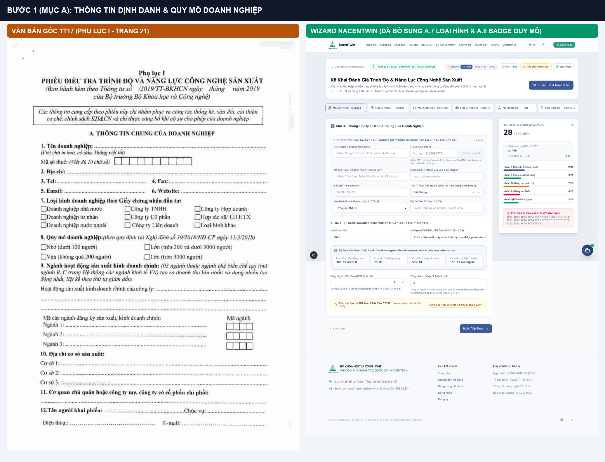
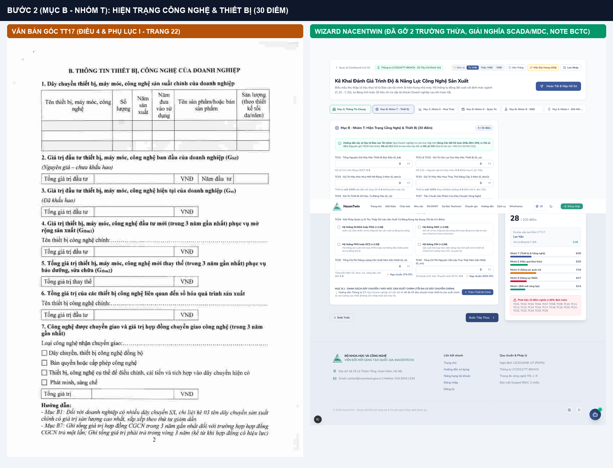
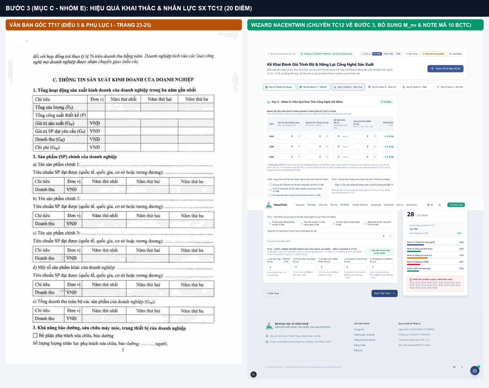
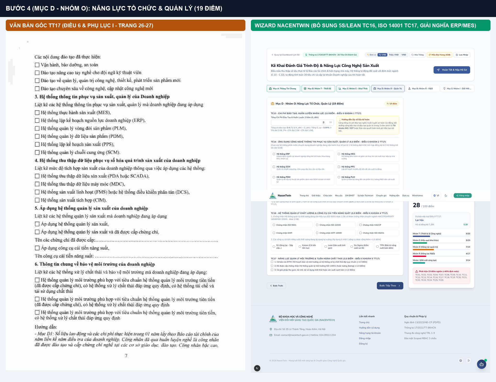
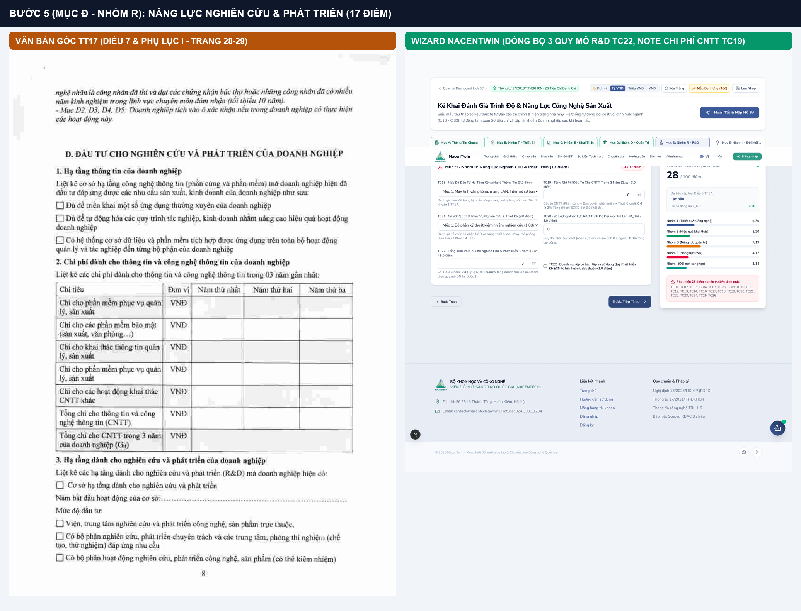
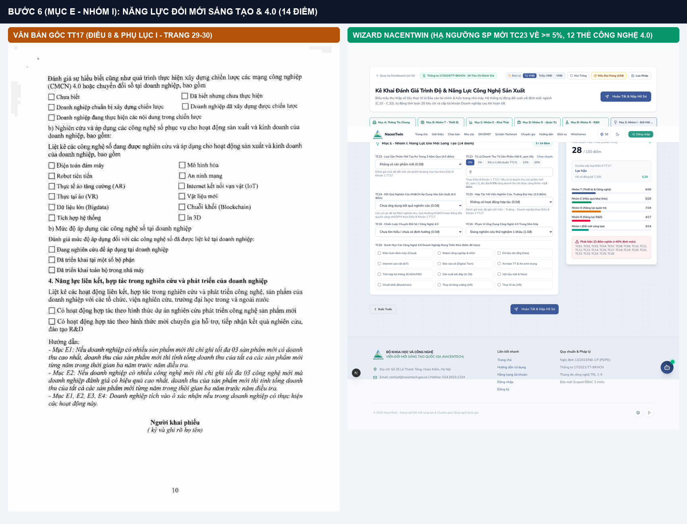

Giảm thời gian kê khai nhờ gộp 36 ô NVL/Năng lượng, 18 ô CNTT & tra cứu MST tự động.
Đã gỡ bỏ "Tuổi bình quân MMTB" và "Tỷ lệ NVL định mức" khỏi Bước 2 (không thuộc TT17).
Đã bổ sung Loại hình DN (A.7), Badge quy mô (A.8), Mnv (TC12), 5S/Lean (TC16) & ISO 14001 (TC17).
Đã hạ ngưỡng SP mới TC23 về ≥ 5%; phân 3 khung quy mô R&D TC22; chuyển TC12 về Bước 3.

| Form Gốc Thông Tư 17 | Phát Hiện Trước Khi Sửa | Trạng Thái Hiện Tại | Chi Tiết Đã Bổ Sung & Note Hướng Dẫn |
|---|---|---|---|
| A.1 Tên DN & Mã số thuế: Nhập tay 10 ô chữ số MST. | Ô nhập MST + Nút Tra cứu MST tự động gọi API VietQR nạp Tên & Địa chỉ. | ĐÃ CHUẨN Tiết kiệm 80% thời gian nhập ban đầu. | Giữ nguyên tính năng tra cứu tự động. |
| A.7 Loại hình DN: Bắt tích chọn loại hình doanh nghiệp (TNHH, CP, DNTN, FDI, DNNN...). | Có lưu trường companyType trong model nhưng thiếu dropdown trên giao diện. |
ĐÃ BỔ SUNG Đã thêm Select Loại Hình Doanh Nghiệp (Mục A.7 TT17). |
Cho phép chọn: Công ty TNHH / Công ty Cổ phần / DNTN / DN FDI / DNNN. |
| A.8 Quy mô DN: Nhỏ, Vừa, Lớn theo Nghị định 39/2018 + Vốn & Lao động M. | Có 2 ô nhập Tổng nguồn vốn và Tổng lao động M, nhưng chưa hiển thị kết quả phân loại quy mô. | ĐÃ BỔ SUNG Đã thêm Badge tự động phân loại quy mô DN ngay dưới 2 ô nhập. |
Tự động hiển thị quy mô & định mức R&D: - DN Nhỏ và Vừa (SME) - DN Lớn nhóm 2 (Vốn > 100 tỷ & LĐ > 200) - DN Lớn nhóm 1 (Vốn > 1.000 tỷ & LĐ > 3.000) Note: Vốn lấy Mã 440 BCTC; Lao động làm việc ≥ 3 tháng (Khoản 8 Điều 2 TT17). |
| A.9 Ngành SXKD: Kê khai ngành chế biến chế tạo tạo doanh thu lớn nhất. | Dropdown chọn 1 trong 23 mã ngành VSIC (C.10 → C.32), tự động nạp Kchuẩn 1..4. | ĐÃ CHUẨN Khớp với bảng Phụ lục II định mức so sánh ngành. | Giữ nguyên card hiển thị 4 định mức ngành. |

| Tiêu Chí / Trường Dữ Liệu | Thông Tư 17 Gốc | Phát Hiện Trước Khi Sửa | Trạng Thái Đã Khắc Phục Trên Wizard |
|---|---|---|---|
| Trường Thừa 1: Tuổi bình quân máy móc | KHÔNG CÓ trong TT 17/2019/TT-BKHCN. | Ô nhập số năm + nút chọn nhanh (5 năm, 10 năm, 15 năm). | ĐÃ GỠ BỎ Đã xóa khỏi Bước 2 để giao diện tinh gọn, không gây nhiễu. |
| Trường Thừa 2: Tỷ lệ tiêu hao NVL định mức | KHÔNG CÓ trong TT 17/2019/TT-BKHCN. | Ô nhập % + nút chọn nhanh (90%, 95%, 98%). | ĐÃ GỠ BỎ Đã xóa khỏi Bước 2 vì không tham gia bất kỳ công thức nào. |
| TC01: Khấu hao TBCN (Kkh, 5đ) | Kkh = ((Gbđ - Gsx) / Gbđ) × 100% (Gbđ nguyên giá, Gsx còn lại). | 2 ô nhập Gbđ và Gsx, có tính Kkh tự động. | ĐÃ BỔ SUNG CẢNH BÁO Đã thêm cảnh báo đỏ nếu Gsx > Gbđ. Note: Gbđ lấy Mã 211, Gsx lấy Mã 210 trên Bảng CĐKT. |
| TC04: Thu thập dữ liệu & Điều khiển tích hợp (4đ) | 4 hệ thống: SCADA/PDA (+1đ), MDC (+1đ), FMS/DCS (+1đ), CIM (+1đ). | 4 Checkbox viết tắt tiếng Anh không giải thích. | ĐÃ BÌNH DÂN HÓA Đã ghi rõ giải thích tiếng Việt ngay dưới mỗi mã: SCADA/PDA (Giám sát & thu thập dữ liệu), MDC (Dữ liệu máy thời gian thực), FMS/DCS (Điều khiển phân tán), CIM (Tích hợp máy tính toàn diện). |
| TC05 & TC06: Chi phí Năng lượng & Nguyên vật liệu (8đ) | Phụ lục I bắt khai bảng 36 ô. Điều 4: Chỉ lấy Gnl / Gsp và Gnvl / Gsp. | Rút gọn thành 2 ô Tổng tiền (Gnl, Gnvl) + nút ⚡ Nạp chuẩn ngành. | ĐÃ CHUẨN Giảm 90% thời gian cho DN. Note: Gnl là tổng tiền điện, than, dầu; Gnvl lấy TK 621 BCTC. |
| B.1: Danh mục máy móc xưởng | Mục B.1 ghi rõ: Chỉ liệt kê tối đa 03 dây chuyền SX chính. | Bảng thêm máy móc động chưa có ghi chú giới hạn. | ĐÃ THÊM NOTE Đã ghi chú rõ: Chỉ cần liệt kê tối đa 03 máy/dây chuyền chính có tỷ trọng sản lượng lớn nhất. |

| Tiêu Chí / Trường Dữ Liệu | Thông Tư 17 Gốc | Phát Hiện Trước Khi Sửa | Trạng Thái Đã Khắc Phục Trên Wizard |
|---|---|---|---|
| Bảng số liệu SXKD 3 năm | Mục C.1 gồm Gtts, Gdt, Mtt, Gcp 3 năm liền kề. | Ghi nhầm Doanh thu thuần là Mã 01 thay vì Mã 10. | ĐÃ CHUẨN HÓA Đã sửa tiêu đề & Note: Gdt lấy Mã số 10 BCKQKD; Gcp = Mã 11 + Mã 22 + Mã 25 + Mã 26. |
| TC09: Sáng kiến Kaizen (3đ) | Có chính sách (1đ) + Có ≥ 3 sáng kiến (1đ) + Sáng kiến giá trị cao (1đ). Kèm liệt kê sáng kiến tiêu biểu. | 3 Checkbox điểm chuẩn, thiếu ô nhập tên sáng kiến tiêu biểu. | ĐÃ BỔ SUNG Đã thêm ô nhập tùy chọn: Kể tên 1–3 sáng kiến cải tiến tiêu biểu (Phụ lục I Mục C.3). |
| TC12: Chất lượng nhân lực sản xuất (4đ) | Điều 5 Khoản 6: Thuộc Nhóm E (Bước 3), chấm 4 tiêu chí: Mcn (≥80% Mtt), Mbc (≥20% Mtt), Mql (≥50% Mgt) và Mnv (≥60% Mgt). | Đặt nhầm ở Bước 4 và thiếu ô nhập Cán bộ nghiệp vụ CĐ/ĐH (Mnv). | ĐÃ CHUYỂN VỀ BƯỚC 3 & BỔ SUNG Mnv Đã đưa trọn bộ 5 ô nhân sự TC12 về Bước 3, khôi phục ô CB Nghiệp Vụ CĐ/ĐH+ (M_nv) kèm nút ⚡ Ước tính nhanh theo cơ cấu chuẩn. |

| Tiêu Chí / Trường Dữ Liệu | Thông Tư 17 Gốc | Phát Hiện Trước Khi Sửa | Trạng Thái Đã Khắc Phục Trên Wizard |
|---|---|---|---|
| TC16: Quản lý chất lượng & 5S/Lean (3đ) | Có chứng chỉ ISO (2đ) + Áp dụng công cụ cải tiến năng suất 5S/Lean/Kaizen (+1đ). | Đánh nhầm nhãn thành TC13 và thiếu các checkbox công cụ 5S/Lean/Kaizen. |
ĐÃ BỔ SUNG ĐẦY ĐỦ Đã chuẩn hóa nhãn TC16 và thêm 5 checkbox công cụ: 5S, Kaizen, Lean, Six Sigma, TPM (+1.0đ). |
| TC17: Bảo vệ môi trường (3đ) | Xử lý chất thải đạt chuẩn (1đ) + Có chứng chỉ ISO 14001 (2đ) + Tái chế chất thải (3đ). | Chỉ có 2 checkbox, thiếu checkbox chứng nhận ISO 14001. | ĐÃ BỔ SUNG ISO 14001 Đã thêm checkbox số 2: Đã được cấp chứng nhận Hệ thống quản lý môi trường ISO 14001 (+1.0 điểm). |
| TC14: 6 phần mềm quản trị (5đ) | 6 phần mềm: MES, ERP, PLM, PDM, PPS, SCM. | 6 Checkbox viết tắt tiếng Anh chưa có mô tả. | ĐÃ BÌNH DÂN HÓA Đã hiển thị giải nghĩa tiếng Việt ngay dưới từng hệ thống: ERP, MES, SCM, PPS, PDM, PLM. |
| TC15: Quản lý hiệu suất thiết bị OEE (5đ) | OEE = Ptt / P (≥ 85% 5đ, ≥ 70% 4đ, ≥ 60% 3đ...). | Nút chọn nhanh các mức OEE (40%, 50%, 65%, 75%, 90%). | ĐÃ CHUẨN Trực quan, dễ chọn, kèm giải thích Điều 6 Khoản 3 TT17. |

| Tiêu Chí / Trường Dữ Liệu | Thông Tư 17 Gốc | Phát Hiện Trước Khi Sửa | Trạng Thái Đã Khắc Phục Trên Wizard |
|---|---|---|---|
| TC19: Chi phí CNTT 3 năm (Gtt, 3đ) | Bảng kê chi tiết 18 ô (phần mềm quản lý, bảo mật, dịch vụ CNTT 3 năm). | Rút gọn thành 1 ô duy nhất: Tổng chi phí CNTT 3 năm (Gtt). | ĐÃ BỔ SUNG NOTE Cắt bỏ 17 ô chi tiết thừa, thêm hướng dẫn: Phần cứng + Bản quyền phần mềm + Thuê Cloud (≥ 2% Tổng chi phí SXKD đạt 3.0đ). |
| TC22: Kinh phí R&D & Quỹ KH&CN (5đ) | Phân nhánh 3 cấp quy mô DN: SME cần ≥ 1.0% doanh thu; DN lớn nhóm 2 cần ≥ 0.5%; DN lớn nhóm 1 cần ≥ 0.1%. | Trước đây tính chung 1 khung ngưỡng cứng. | ĐÃ ĐỒNG BỘ FE & BE Đã cập nhật cả assessment-tt17.ts và Tt17ScoringEngine.cs phân nhánh chính xác theo 3 quy mô DN đúng Điều 7 Khoản 5 TT17. |
| TC20: Nhân lực R&D (3đ) | H5 = Mr&d / M, phân nhánh theo 3 cấp quy mô DN. | Ô nhập số lượng Mr&d, tự động tính % và phân nhánh quy mô. | ĐÃ CHUẨN Thêm ghi chú quy đổi nhân sự kiêm nhiệm tính 0.5 người. |

| Tiêu Chí / Trường Dữ Liệu | Thông Tư 17 Gốc | Phát Hiện Trước Khi Sửa | Trạng Thái Đã Khắc Phục Trên Wizard |
|---|---|---|---|
| TC23: Tỷ lệ doanh thu sản phẩm mới (4đ) | Điều 8 Khoản 1: Doanh thu SP mới chiếm ≥ 5% tổng doanh thu → Cộng thêm +1.0 điểm. | Trước đây yêu cầu ≥ 20% mới cộng điểm. | ĐÃ SỬA VỀ ≥ 5% Đã cập nhật ngưỡng cộng điểm từ ≥ 20% về đúng ≥ 5% trên cả FE, BE và các nút chọn nhanh (0%, 3%, 5% chuẩn TT17, 10%, 20%). |
| TC24: Kết quả nghiên cứu công nghệ (4đ) | Đang NC (1đ), Thử nghiệm Lab (2đ), Giải pháp hữu ích (3đ), Bằng sáng chế (4đ). | Dropdown chọn 5 mức từ Chưa có đến Bằng sáng chế. | ĐÃ BỔ SUNG NOTE Thêm ghi chú căn cứ đề tài nghiệm thu, Giải thưởng KH&CN hoặc Bằng sáng chế/GPHI. |
| TC26: Chuyển đổi số 4.0 (4đ) | Chiến lược 4.0 (1đ) + Ứng dụng các công nghệ số (1đ - 3đ). | Dropdown Chiến lược + Dropdown Phạm vi + Grid 12 thẻ công nghệ 4.0 bấm chọn trực quan. | ĐÃ CHUẨN Trực quan và dễ điền hơn bản giấy rất nhiều lần. |
| Bước | Tiêu Chí | Chỉ Tiêu / Trường Dữ Liệu | Vị Trí Tra Cứu Trên Báo Cáo Tài Chính (BCTC) | Công Dụng Đối Soát Trong TT17 |
|---|---|---|---|---|
| 1 | Mục A | Tổng nguồn vốn cuối năm | Mã số 440 (TỔNG CỘNG NGUỒN VỐN) trên Bảng Cân đối Kế toán (Mẫu B01-DN). | Xác định quy mô DN cho TC20 và TC22. |
| 1 | Mục A | Tổng số lao động bình quân (M) | Báo cáo tình hình sử dụng lao động hoặc Thuyết minh BCTC (lao động làm việc ≥ 3 tháng). | Mẫu số tính NSLĐ (TC08) và tỷ lệ R&D (TC20). |
| 2 | TC01 | Tổng nguyên giá MMTB ban đầu (Gbđ) | Mã số 211 (Nguyên giá TSCĐ hữu hình) trên Bảng Cân đối Kế toán. | Tính hệ số khấu hao TBCN Kkh. |
| 2 | TC01 | Giá trị còn lại của MMTB (Gsx) | Mã số 210 (Tài sản cố định hữu hình) = Mã 211 trừ Hao mòn lũy kế (Mã 212). | Tính Kkh (TC01), Kcđ (TC02), Kđm (TC03). |
| 2 | TC05 | Chi phí năng lượng sản xuất (Gnl) | Tổng hóa đơn tiền điện SX, than, dầu, khí đốt trong Thuyết minh chi phí sản xuất. | Tính Knl so với chuẩn ngành Kchuẩn 2. |
| 2 | TC06 | Chi phí nguyên vật liệu trực tiếp (Gnvl) | Tài khoản 621 (Chi phí NVL trực tiếp) trong Thuyết minh BCTC hoặc Sổ cái TK 621. | Tính Knvl so với chuẩn ngành Kchuẩn 3. |
| 3 | TC08 | Doanh thu thuần (Gdt) | Mã số 10 (Doanh thu thuần về BH & CCDV) trên Báo cáo Kết quả HĐKD (Mẫu B02-DN). | Tính NSLĐ bình quân chuỗi 3 năm. |
| 3 | TC08 | Tổng chi phí SXKD (Gcp) | Mã 11 (Giá vốn) + Mã 22 (CP tài chính) + Mã 25 (CP bán hàng) + Mã 26 (CP QLDN). | Mẫu số tính tỷ lệ chi phí CNTT (TC19) và đào tạo (TC13). |
| 4 | TC13 | Chi phí đào tạo huấn luyện 3 năm (Gđthl) | Sổ chi tiết chi phí quản lý doanh nghiệp (TK 642 / 627 - tiểu khoản Đào tạo, bồi dưỡng tay nghề). | Tính tỷ lệ Kđthl so với tổng chi phí. |
| 5 | TC19 | Chi phí CNTT 3 năm (Gtt) | Hóa đơn mua bản quyền phần mềm, cước viễn thông/Internet, thuê Cloud và máy chủ. | Tính tỷ lệ Ktt so với tổng chi phí Gcp. |
| 5 | TC22 | Kinh phí R&D 3 năm (Grd) & Quỹ KH&CN | Sổ theo dõi Quỹ Phát triển KH&CN (TK 356) hoặc Thuyết minh chi phí nghiên cứu chế thử SP mới. | Tính tỷ lệ Kr&d theo quy mô DN. |
Báo cáo kiểm toán được xuất bản tự động phục vụ rà soát và nghiệm thu kỹ thuật (Quality Gate 1 - Spec Kit NacenTech).
Mở Màn Hình Wizard Đánh Giá Đã Cập Nhật